地政学
成都は四川盆地の中心にあり、チベット高原、雲南、重慶、西北内陸を結ぶ中国西部の要衝です。軍需、航空、鉄道、内陸物流が重なり、沿海部に偏る成長を西へ引き寄せる戦略都市にもなっている今も重要な要所です。

🇨🇳 中国 / 四川省 / World City Atlas
四川盆地の湿った平野に広がる西部中国の巨大都市です。電子産業、ゲーム、鉄道物流、茶館、火鍋、寺院、パンダ観光、地震の記憶が、ゆるやかな生活感と急速な都市成長の中で重なります。
都市の骨格
成都は、肥沃な盆地、都江堰の水利、内陸交通、電子産業、大学、茶館の時間感覚が一体になった都市です。西部中国の玄関口であり、生活文化の強い大都市でもあります。
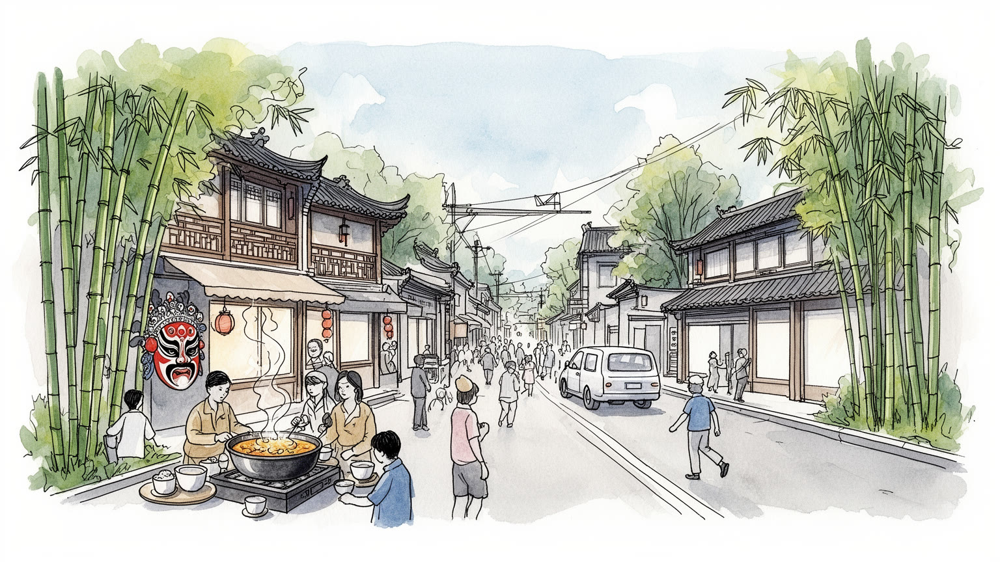
成都は四川盆地の中心にあり、チベット高原、雲南、重慶、西北内陸を結ぶ中国西部の要衝です。軍需、航空、鉄道、内陸物流が重なり、沿海部に偏る成長を西へ引き寄せる戦略都市にもなっている今も重要な要所です。
電子機器、半導体、ゲーム、ソフトウェア、航空宇宙、金融、物流、観光、飲食が雇用を厚くします。大学卒の若者と工場労働者、配達員、サービス職が同じ都市圏で働き、成長の速度を支えている労働の都市でもあります。
茶館、火鍋、川劇、道教寺院、仏教寺院、三国志の記憶が、成都の穏やかな都市像を作ります。信仰は観光施設だけでなく、線香、縁日、食、家族の外出、近所の会話に溶け込んで続く今も街の内側に息づく生活文化です。
観光客はパンダ、武侯祠、寛窄巷子、火鍋を楽しみ、住民は通勤、教育、湿気、猛暑、住宅、洪水、地震への備えと向き合います。茶館、夜市、学校、子どもと高齢者から、大都市の日々の負荷も見える暮らしの現場です。
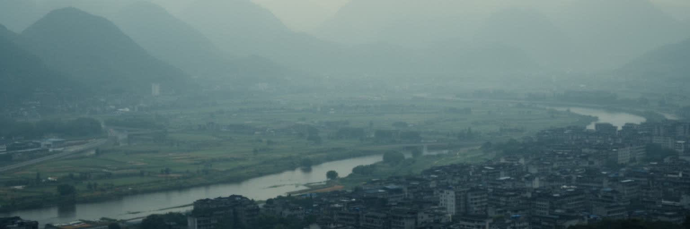
成都を読む入口は、四川盆地の平らで湿った地形です。東を重慶方面の丘陵に、西を龍門山脈とチベット高原の縁に囲まれた盆地は、雲が低く、霧や雨が多く、夏の暑さがこもりやすいです。古くから都江堰の水利が平野を潤し、米、野菜、茶、養蚕、商業を支える豊かな土地を作ります。都市はその肥沃さの上に広がり、錦江の水辺、環状道路、高層住宅、地下鉄、大学、工業団地を重ねています。外から見ると成都は内陸都市ですが、実際には盆地全体を背後に持つ大きな生活圏です。水は恵みでありながら、豪雨時の排水や低地の浸水を左右する条件にもなります。山に近い西部では地震や土砂災害の記憶も消えません。ゆったりした茶館の時間感覚は、この地理の安定に支えられてきましたが、急速な開発は土地の使い方を変え、農村と市街地の境界を押し広げました。成都の穏やかさは単なる気質ではなく、水利、盆地気候、食料生産、内陸交通が長く作ってきた都市の基盤です。湿った空気と遠い山影、茶葉と辣油の匂いを読むと、この都市がなぜ外へ急ぎながらも、生活の場所としての重心を失わないのかが見えてきます。都心の公園や郊外の農地を歩くと、開発の速さと水田の記憶が近い距離に残ります。盆地は都市を閉じ込める壁ではなく、食、会話、商売、移動のゆっくりした厚みを保つ器でもあります。この器の感覚が、成都の都市文化を支える静かな背景です。
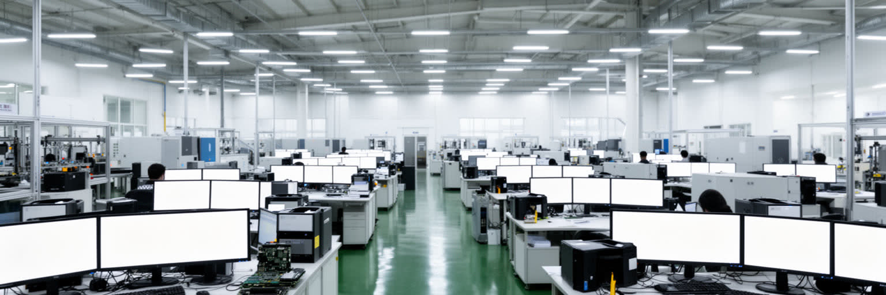
成都の現代的な重要性は、茶館や歴史地区だけでは説明できません。電子機器、半導体、ディスプレー、ソフトウェア、ゲーム、デジタルコンテンツ、航空宇宙関連が集まり、西部中国の技術産業を代表する都市になりました。高新区や天府新区には研究開発、外資系製造、国内大手の拠点、スタートアップ、大学発の人材が重なり、内陸でも沿海部に近い産業環境を作ろうとしています。ゲーム産業は若いクリエイター、プログラマー、音響、翻訳、配信者、広告、外注管理を生み、地元メディアやｅスポーツの観戦文化とも結びつきます。工場では精密部品を扱う技能労働と交代勤務があり、オフィスでは長時間の開発競争が続きます。高賃金の技術職が増える一方、配達、清掃、警備、食堂、下請け製造がその周囲を支えます。成都の強みは、生活費や教育機関、広い土地、政府の産業政策を組み合わせ、沿海都市から人材と企業を引き寄せる点にあります。ただし技術都市になるほど、住宅価格、競争、若者の疲労、景気の変動も大きくなります。内陸の穏やかな都市というイメージの裏で、成都は世界の電子供給網とデジタル娯楽の一部として動いています。研究区の明るい建物だけを見れば新産業の物語は滑らかですが、実際には部品の納期、寮生活、派遣契約、知的財産、規制の変化が日々の仕事を左右します。技術都市としての成都は、創造性と管理の緊張の上に成り立っています。
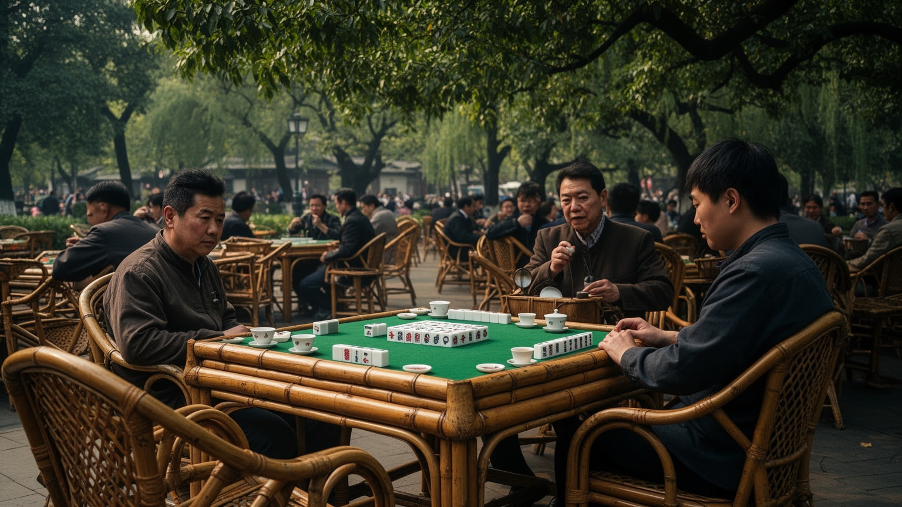
成都の都市像を支えるもっとも身近な場所は茶館です。公園の竹椅子、蓋碗茶、麻雀、卓球帰りの会話、耳掃除、新聞、スマートフォン、子どもを連れた家族が一つの空間に混ざり、街の速度を少し遅くします。茶館は観光客が成都らしさを感じる場である前に、住民が情報を交換し、時間を共有し、退職後の生活を組み立てる日常の居場所です。仕事の打ち合わせや友人との長話、縁談、近所の噂、政治へのささやかな反応も、湯気の向こうに置かれます。近年は商業施設のカフェ、若者向けの新しい茶飲料、観光化した古街が増え、昔ながらの茶館だけが都市文化を代表するわけではなくなりました。それでも、成都の公共性は大声の広場よりも、長く座れる場所に宿ります。急速な再開発で路地や古い公園の茶館が減れば、都市は単に風景を失うのではなく、世代が交差する会話の場を失います。茶館文化は怠けの象徴ではなく、内陸大都市が過密と競争の中で生活の余白を守る方法です。そこでは金銭消費の大きさより、座っていられる時間が都市の豊かさを示します。成都を歩くなら、観光名所を急ぐだけでなく、茶を一杯置いて人の流れを眺める時間が必要になります。店員が湯を差し、常連が席を譲り、外から来た人が隣の会話に耳を傾けます。こうした小さな作法が、巨大都市を匿名の集合にしないための柔らかな仕組みになっています。
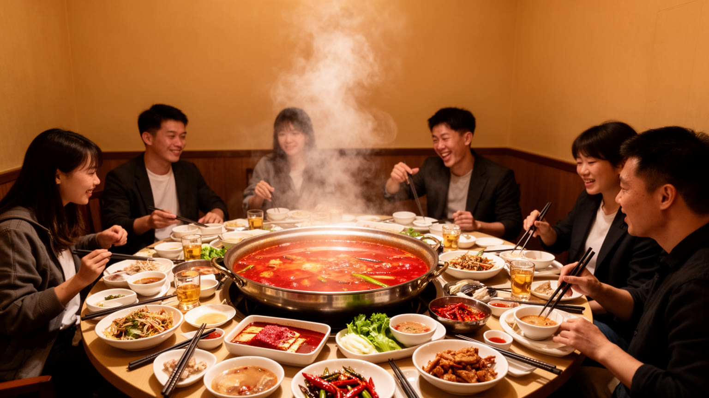
成都の火鍋は、辛い名物というだけでは足りません。唐辛子、花椒、牛油、香味野菜、内臓、肉、野菜、豆製品を煮立てる鍋は、四川盆地の湿気、保存と流通、庶民の食、外食産業、夜の社交をまとめて映しています。友人や同僚が一つの鍋を囲む時間は、仕事の緊張をほぐし、親密さを測り、辛さへの耐性を笑いに変えます。火鍋店は大規模チェーンから路地の店まで幅広く、厨房の仕込み、食材調達、配膳、清掃、深夜勤務、配達プラットフォームの労働に支えられます。鐘水餃、担担麺、串串香を売る市場や屋台も、辣油の匂いで夜道を満たします。観光地化した火鍋は写真映えを求めますが、地元の食卓では価格、量、近さ、店員との距離が重要です。辛さは成都の気候や気質を説明する記号として使われやすいですが、実際には移民、若者、家族、出張者が同じ都市に入っていく入口にもなっています。火鍋を読むことは、食がいかに都市の労働と社交をつなぎ、夜の経済を動かしているかを読むことです。鍋の湯気の向こうに、成都の商売の柔らかさと競争の厳しさが同時に見えます。火鍋はまた、都市の外へ広がるブランドでもあります。各地に出店する成都系の店は、四川の味を全国化しながら、故郷を離れた人に盆地の記憶を届けます。辛さは商品であり、帰属の言葉でもあります。食卓の熱が、都市の結びつきを強めています。
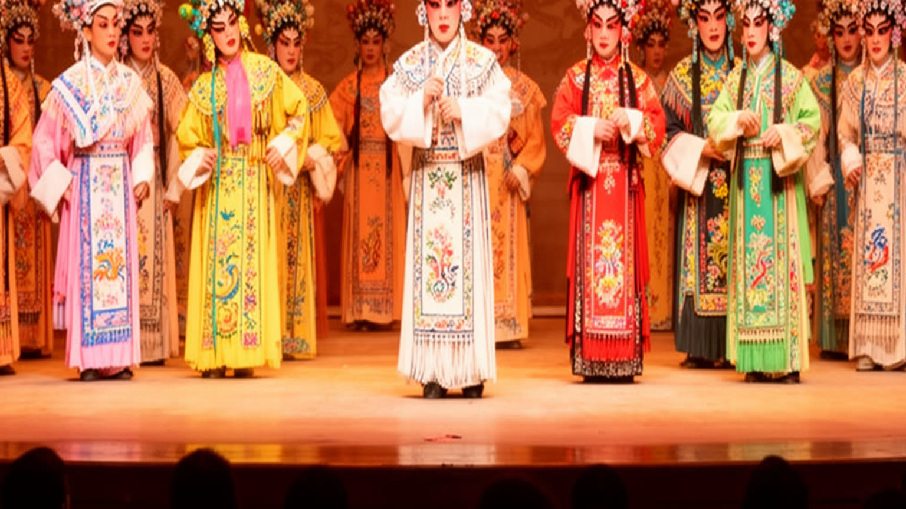
成都の文化は、茶館と食だけでなく、川劇、道教、仏教、三国志の記憶によって厚みを持ちます。川劇の変面は観光客に強い印象を残しますが、舞台芸能としては唱、念、所作、音楽、衣装、弟子入り、劇場運営が長い訓練と地域の観客に支えられています。青羊宮の道教、文殊院の仏教、武侯祠の三国志の物語は、信仰、歴史教育、観光、家族の外出が重なる場所です。線香を上げる人、庭を歩く高齢者、修学旅行の子ども、写真を撮る若者、春節の参拝帰りに食事をする家族は、同じ空間を違う意味で使います。宗教施設は国家管理と観光化の中にありながら、都市の喧噪から一歩引く場所として機能します。川劇や寺院が単なる伝統の展示になれば、文化は薄い記号になります。重要なのは、舞台を学ぶ人がいて、寺院に通う人がいて、夜の小劇場や音楽バーへ物語を戻す場が残ることです。成都の文化的な柔らかさは、過去を保存ケースに閉じ込めるのではなく、食事、散歩、参拝、劇場の笑いの中で使い続ける点にあります。都市が新しくなるほど、こうした古い場は記憶の支点として意味を増していきます。寺院の静けさと劇場のにぎわいは対照的に見えますが、どちらも人が集まり、物語を共有し、日常の外側に少し身を置く装置です。成都の精神的な厚みは、その往復の中に残ります。観光客の拍手と常連の祈りが近くにあることが、この都市文化の特徴です。
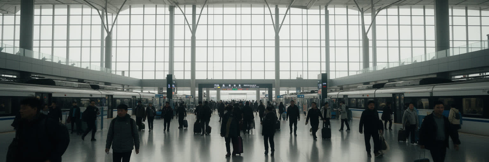
成都は西部中国の玄関口として、交通の重みが大きいです。高速鉄道は重慶、西安、貴陽、昆明、蘭州方面へ伸び、地下鉄は広い市街地と新興開発区を結び、双流と天府の空港は国内外の人の流れを受け止めます。さらに中欧班列のような国際貨物鉄道は、内陸都市が海港だけに頼らず、中央アジアや欧州方面へ製品を動かす象徴になりました。電子部品、機械、食品、越境商取引の商品は、倉庫、保税区、トラック、税関、情報システムを通じて動きます。交通網は企業誘致に有利ですが、通勤距離の拡大、駅周辺の不動産開発、空港建設による土地利用の変化も生みます。鉄道や空港の地図は華やかでも、実際の物流は仕分け、積み替え、夜勤、保守、検査、運転、配送員の身体によって支えられます。成都が内陸の奥まった都市から広域ネットワークの節点へ変わったことは、西部開発の成果であると同時に、地域間競争の始まりでもあります。交通が速くなるほど、人材、資本、観光客は集まりやすいですが、周辺都市との格差も広がります。成都の結節性は、便利さだけでなく、西部中国の都市体系を組み替える力です。駅前の再開発や空港都市の構想は、地図の上では未来的に見えます。しかし住民にとっては、地下鉄の案内音、電動バイクやスクーターのベル、家賃、通勤時間、故郷へ帰る切符の取りやすさが交通の実感を決めます。大きなネットワークは、日々の移動の細部に宿ります。
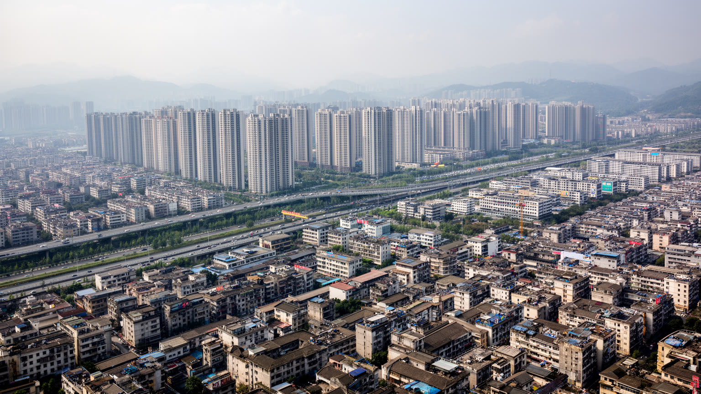
成都の成長は、高層住宅の連なりを見ればよく分かります。旧城の外側へ環状道路が広がり、地下鉄沿線、新区、産業団地の周囲にマンション、学校、商業施設、オフィスが次々に建りました。地方からの転入者、大学卒の若者、子育て世帯、投資目的の購入者が住宅市場を押し上げ、暮らしの選択肢を増やす一方、家賃、住宅ローン、通勤時間、学区への不安も大きくしました。古い路地や単位住宅は再開発で姿を変え、茶館や小商店があった近隣の関係も薄れやすいです。新しい団地は清潔で便利ですが、管理費、駐車場、エレベーター、セキュリティ、配送動線が生活を細かく規定します。太古里、錦里、寛窄巷子の買い物空間は華やかですが、普通の住民が中心部に住み続けるには重い場所になることもあります。住宅成長は経済力の証拠であると同時に、都市がどの世代にどんな生活を約束できるかを問う指標です。成都らしい余裕は、広い公園や洒落た商業施設だけでは保てません。働く人が通える距離に住み、子どもを育て、高齢者が近所で座れる場所を残せるかどうかが、都市の成熟を決めます。住宅の地図は、成都の夢と不安を同時に描いています。郊外の新居は広さと新しさを与えますが、祖父母の助け、保育園、職場、病院から遠ざかることもあります。住まいの選択は、家族の時間配分を決める都市政策そのものです。近所の小さな店が残るかどうかも、生活の質を左右します。
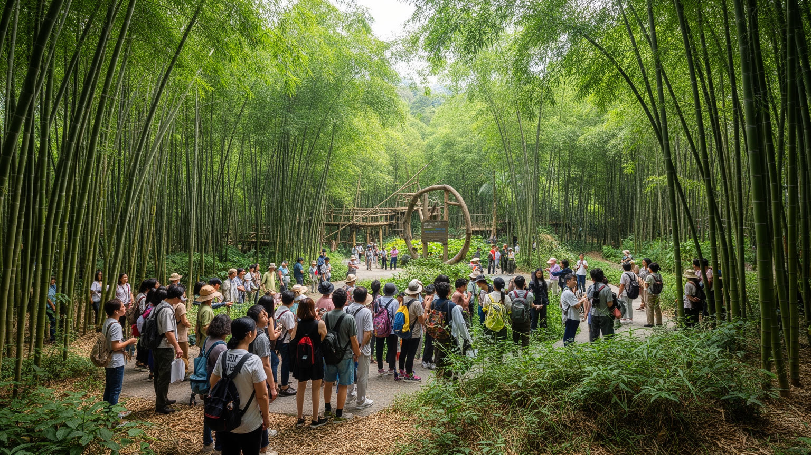
成都の観光イメージで最も強い記号はパンダです。繁育研究基地や周辺の竹林は、家族旅行、修学旅行、海外からの来訪者を引き寄せ、都市を柔らかく親しみやすい場所として世界に示してきました。パンダは単なるかわいい動物ではなく、四川の山地生態系、保護研究、外交、教育、土産物、交通、ホテル、都市ブランディングを結ぶ存在です。来訪者は短い時間で愛らしい姿を見ますが、その背後には飼育、獣医療、繁殖研究、遺伝管理、竹の供給、混雑管理、周辺開発との調整があります。都市がパンダを前面に出すほど、自然との距離が近い印象を与える一方、実際の生息地は山地の保護区であり、道路、観光、気候変動、地域住民の生活と深く関わります。パンダ観光を読むことは、都市が自然をどのように表象し、消費し、守ろうとしているのかを読むことでもあります。成都の魅力は、パンダの可視性によって入口を得ますが、そこから山地の水源、森林、地震地帯、少数民族地域とのつながりへ視野を広げる必要があります。自然ブランドが本物であるためには、写真を撮る楽しさだけでなく、生態系を支える土地と人への配慮が欠かせません。パンダは都市の看板であると同時に、成都が盆地の外の自然と切り離せないことを教える存在です。観光の混雑をどう抑え、教育的な体験へつなげるかも課題です。その管理の質が、都市の印象を決めます。
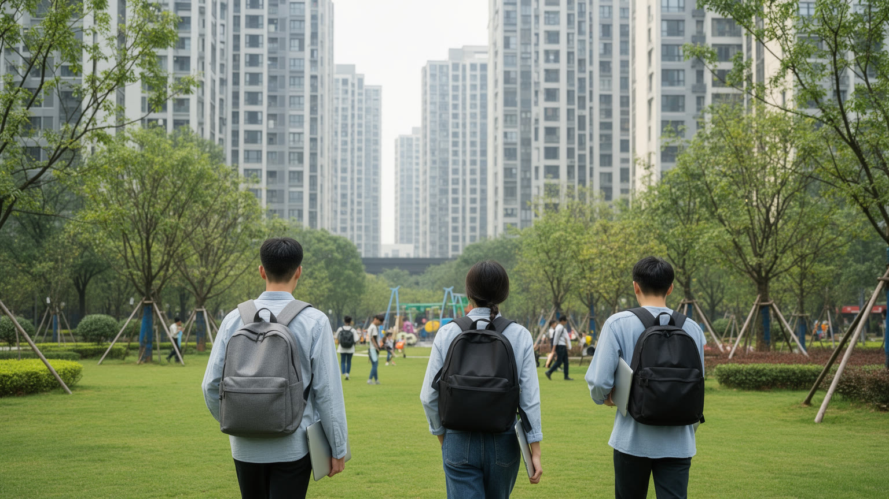
成都は若者を引き寄せる都市としても存在感を持ちます。大学が多く、生活費が沿海大都市より抑えられ、食と娯楽が豊かで、ゲーム、デザイン、動画、ライブ配信、電子商取引、カフェ、飲食、観光、配達の仕事が集まります。ゆったりした都市という評判は、卒業後の選択肢として成都を魅力的にしますが、実際の若者労働は必ずしも楽ではありません。技術職やクリエイティブ職では締め切りと競争が重く、サービス業では長時間勤務、低賃金、賃貸住宅、社会保障、休日の少なさが問題になります。配達員やライドシェアの働き手は、便利な都市生活を支えながら、雨、暑さ、交通事故、アルゴリズムの評価にさらされます。夜の火鍋店、商業施設、ライブハウス、ゲーム会社の明かりは、若者の消費と労働が同じ時間帯に重なっていることを示します。成都の魅力は、ただ仕事があることではなく、働いた後に座れる茶館や友人と食べる鍋、週末に行ける公園がある点にもあります。ですが余白が保てなくなれば、都市の吸引力は弱まります。若者にとって成都は、穏やかな逃避先ではなく、競争と生活のバランスを試す場所です。キャンパスのバスケットコート、サッカー観戦、卓球台、麻雀卓は、学生や新卒者が関係を作る小さな公共圏にもなります。親世代が期待する安定した職と、若者が求める自由な働き方の間にはずれもあります。起業や創作を支える都市であるためには、失敗しても暮らせる家賃、移動、医療、仲間の場が必要になります。
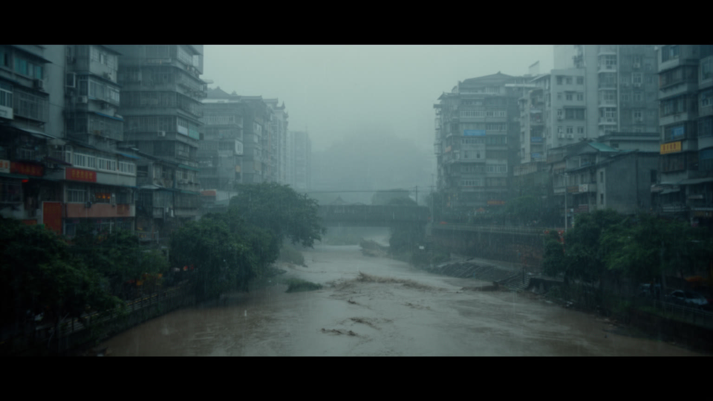
成都の自然リスクは、盆地の湿った気候と山地に近い地震の記憶が重なっています。夏は蒸し暑く、雨が強まる時期には内水氾濫、地下空間、道路冠水、河川の増水が生活に影響します。冬は日照が少なく、湿った寒さが身体に残ります。近年の猛暑は電力需要、屋外労働、高齢者の健康、学校や工場の運営にも関わります。さらに二〇〇八年の汶川地震は、成都の西にある山地で大きな被害を生み、都市住民にも揺れと救援の記憶を刻みました。成都中心部は大規模な壊滅を免れましたが、四川全体の防災意識、建築基準、学校の安全、道路復旧、救急体制への視線は変わりました。盆地の安定した生活は、山地の不安定さと切り離せません。豪雨、土砂災害、地震、暑熱を考えると、都市計画は地下鉄や高層住宅の便利さだけでなく、避難、排水、停電、医療、情報伝達、地域の助け合いを含める必要があります。気候リスクは自然の問題であると同時に、誰が涼しい場所に住めるか、誰が危険な現場で働くか、誰が復旧費を払えるかという社会の問題でもあります。成都の穏やかな景観の下には、防災を日常へ組み込む課題が続いています。学校の避難訓練、地下街の排水設備、スマートフォンの警報、近隣の連絡網は、巨大なインフラと同じくらい重要です。災害を例外にせず、普段の生活の作法へ落とし込めるかが問われます。記憶を共有することが、次の被害を小さくする力になります。
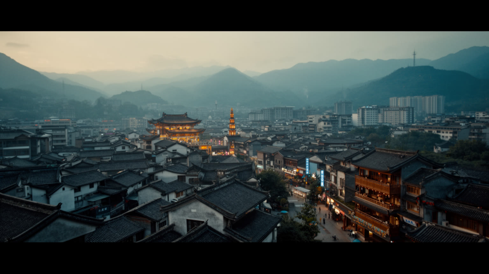
成都を一つの言葉で語れば、西部中国の生活型メガシティです。四川盆地の肥沃な地理、都江堰に象徴される水利、茶館の時間、火鍋の社交、川劇と寺院の記憶、パンダの自然ブランドが、電子産業、ゲーム、航空宇宙、金融、物流、地下鉄、高層住宅と同じ都市に同居しています。沿海部の巨大都市ほど国際金融を前面に出しませんが、内陸の人口、消費、交通、技術人材を束ねる力は大きいです。成都の重要性は、経済規模だけでなく、中国の成長が西へ広がる時に、どんな都市生活を標準として見せるかにあります。ゆったりした評判は魅力ですが、住宅価格、若者の競争、配達労働、暑熱、洪水、地震記憶、観光化の圧力を隠してはなりません。茶館で長く座る人と、夜まで働くゲーム開発者、火鍋店の店員、郊外から通勤する住民、パンダを見に来た家族は、別々の成都を生きています。都市を読むには、それらを一つの風景に重ねる必要があります。成都は古都でも新興技術都市でもなく、その両方を盆地の湿った空気の中で調整し続ける場所です。霧雨、茶の湯気、唐辛子の油、地下鉄の案内音、夜市の呼び声、ローカルメディアのスポーツ談義まで含めて、都市の輪郭が見えます。訪れる側は、名物だけを集めるのではなく、交通、住宅、労働、気候、信仰がどう生活のリズムを作るかを見たいです。成都の大きさは摩天楼の高さより、日常の層の厚さに表れています。